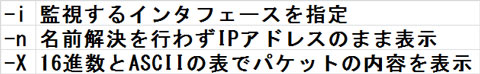
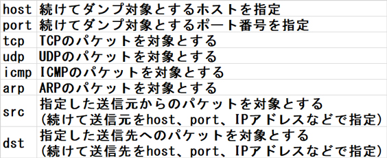
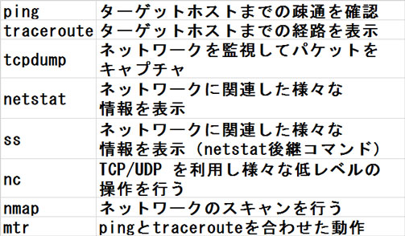

- 問題ID : 22037 高度なネットワーク構成
- 履歴
正解
-n
解説
各プロトコルがどのような通信を行うのかや、不審な通信が行われていないか等を調べる目的で、ネットワークインタフェース上を流れるパケットを監視（パケットキャプチャ）したいことがあります。
Linux では tcpdump コマンドを使うことでパケットキャプチャを行うことができます。
なお tcpdump はユーザ権限で利用できてしまうとセキュリティ上問題があるため、通常 root 権限でのみ実行できます。
書式
tcpdump [オプション] [監視対象の条件式]
主要なオプションは以下の通りです。

上表により、-n オプションにより名前解決を行わず IP アドレスのまま表示を行うように設定することができるとわかります。
したがって
・-n
が正解です。
ネットワーク系の表示を行うコマンド (arp, ping, traceroute, tcpdump, netstat 等) では、共通して -n オプションによりホストやポートを数字のまま表示させる（ホスト名への名前解決を行わない）ことができます。
ネットワーク系コマンドの -n オプションは名前解決を行わないオプション、とまとめて覚えてしまうといいでしょう。
その他の選択肢について解説します。
・-i
監視対象とするインタフェースを指定するオプションなので、誤りです。
・-X
パケットの内容を 16 進数形式と ASCII 形式を横に並べたような表形式で表示するように指定するオプションなので、誤りです。
・-b
このオプションは tcpdump には存在せず、誤りです。
参考
tcpdump コマンドの利用方法は以下の通りです。
書式
tcpdump [オプション] [監視対象の条件式]
主要なオプションは以下の通りです。
また、「監視対象の条件式」部分では以下のような指定を組み合わせて使うことができ、条件に合致したパケットのみが表示されます。条件式を何も書かなかった場合は、すべてのパケットが対象になります。

条件「式」とあるように、実際には上記のような項を and や or といった演算子でつなげて、複雑な条件を書いて対象とするパケットを絞り込むことも可能です。
高度な指定となりますが、興味があれば man マニュアルや、以下の参考 URL などを参照してみるといいでしょう。
また tcpdump の他にも多くのネットワークに関連したユーティリティ系コマンドがあるので、以下にまとめておきます。
